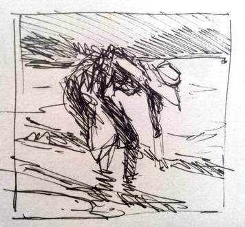
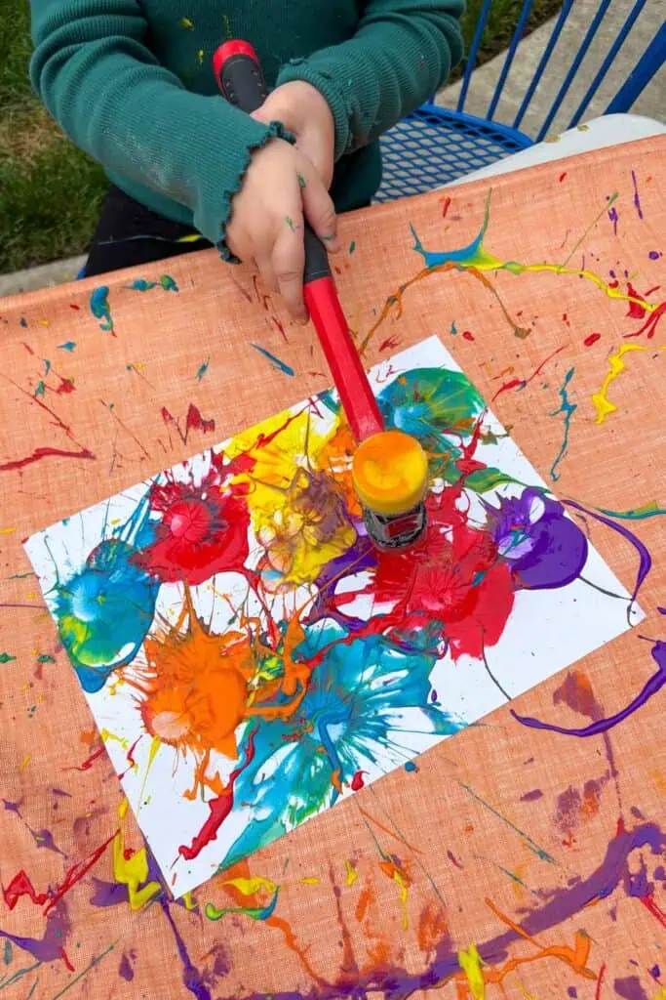
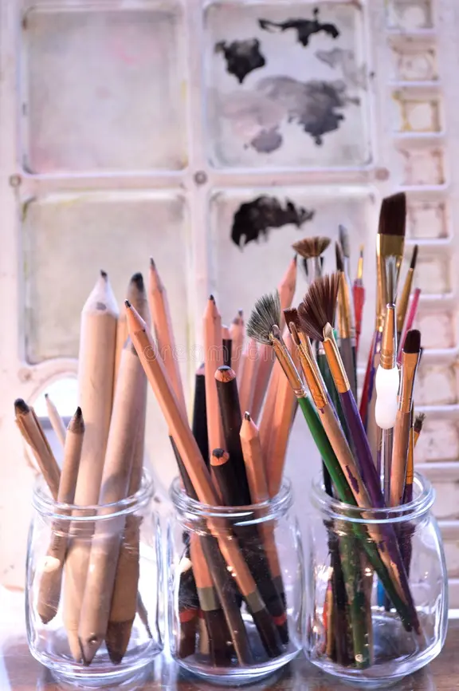
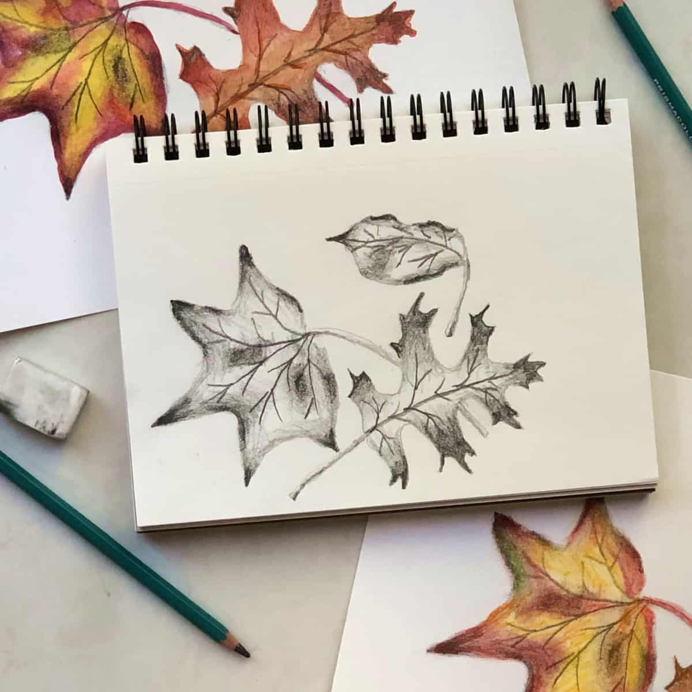

What: The joy of drawing
Drawing is making art. A pencil, a scrap of paper, and curiosity are enough to begin.
Sketching can be spontaneous or carefully planned; there is no right way to make a picture.

Who: Anyone can draw
Drawing is both for beginners and experienced artists. Each sketch is a chance to notice and learnsomething new.
My approach is to practice regularly and value the process more than perfection.

When: Find your moment
A short daily sketch is easier to keep up than waiting for a perfect, long session.
Morning light is useful for observation; a quiet evening can be ideal for imaginative drawing.
- Five-minute warm-up: lines and circles.
- Weekly session: one longer study.
- Anytime: keep a pocket sketchbook nearby.

Where: Draw what is around you
A desk at home offers familiar comfort; a café can provide lively people-watching.
Parks, gardens, and museums offer changing shapes, light, and ideas. Choose a place where you can focus safely.
- At home: arrange a small, comfortable workspace.
- Outside: bring a portable sketchbook.
- On the go: draw objects from memory.
How: Start with simple shapes
Gather paper and a pencil, then warm up with loose lines and circles. Look for the largest shapes in your subject.
Build forms lightly before adding details, and use dark marks where you want emphasis.
- Observe the subject for a few seconds.
- Block in its basic shapes.
- Refine edges, shadows, and details.
Why: Notice, learn, and unwind
Drawing encourages close observation: the curve of a leaf or the way a shadow falls becomes easier to see.
It can be a calming break from screens and a satisfying way to express ideas without words.
- Build patience through regular practice.
- Record small moments and memories.
- Enjoy experimenting without pressure.
